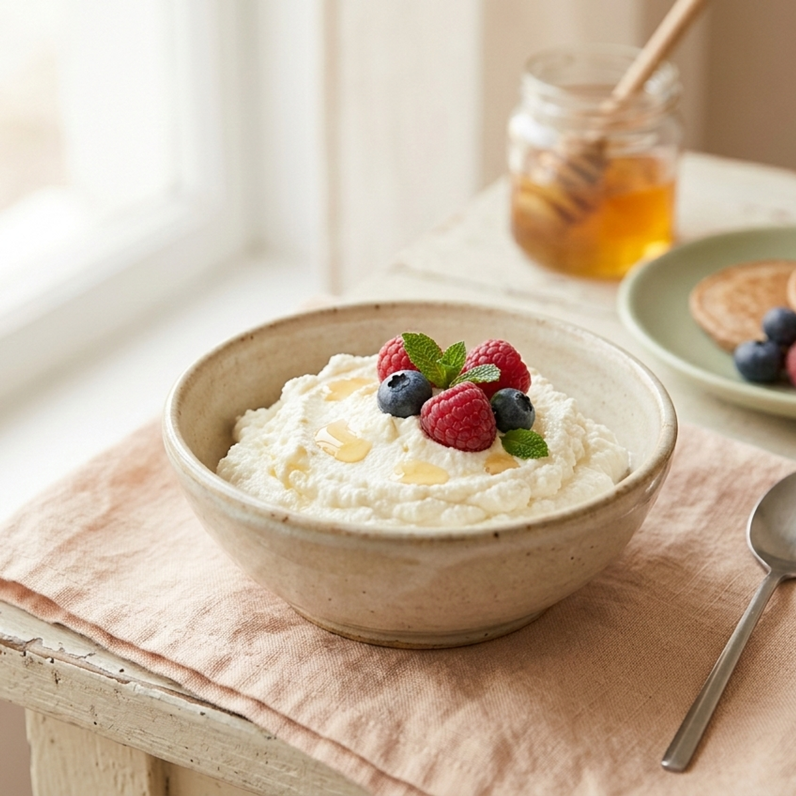

האם הייתם רוצים להשתמש באבקת קקאו שהיא גם בריאה

המספרים שמסתתרים מאחורי האריזות.
אבקת קקאו היא מה בכלל?
אבקת קקאו היא מחית של בצלים של קקאו, המחוקרת בטמפרטורה גבוהה. היא עשירה בפחמימות, בחלבונים, בחומציות, במינרלים ובחומרי לכידה. הטעם הוא חוכץ, עשיר, ומתוקן במידה.
התועלת לבריאות
אבקת קקאו עשירה בחומציות חומציות, בחלבונים ובחלבון גבוה. היא מספקת חלבון שימושי, תומכת במערכת העיכול ומעצימה את הרפואה של המערכת השלילית. כמו כן, היא דלה בקלוריות ומתאימה לכל מי שאוהב לאכול בריא וטעים.
אבקת קקאו יכולה לשמש כתחליף לאבקת קמח, לאבקת סוכר, למנגנוני קינוחים וכדומה. היא יכולה לשמש כתחליף לאבקת קמח, כתחליף לאבקת סוכר, וכטרטליות קלה ומתוקה.
איך לבחור אבקת קקאו טובה?
מומלץ לבחור אבקת קקאו פשוטה, ללא תוספות, ללא סוכר, ללא חלבון מיוזר, ללא טעם מלאכותי. אבקת קקאו עירומה היא הכי בריאה, אך אבקת קקאו עם תוספות טבעיות יכולה להיות מצוינת מדי.
ברוב החנויות הביתיות ניתן למצוא אבקת קקאו טרייה וחדשה, במיוחד אם קונים לפני השימוש. אבקת קקאו ישנה יכולה לאבד את הטעם ואת התכונות הבריאותיות.
איך להשתמש באבקת קקאו?
אבקת קקאו יכולה לשמש כבסיס לעוגיות בריאות, למוס קליל, למנגנוני אחרים ולמנגנוני קינוחים. אפשר להוסיף אבקת קקאו לפנקייקים, למנגנוני אחרים, ולמנגנוני קינוחים.
נסו להוסיף אבקת קקאו למנגנוני שלכם עם תערובות של תיבול. נסו להוסיף אבקת קקאו לעוגת שקדים או לעוגת קקאו. נסו להוסיף אבקת קקאו לפנקייקים או למנגנוני אחרים.